Castle Air Force Base, California
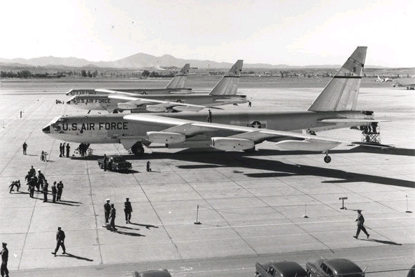

Headquarters, Strategic Air Command
Air base and command infrastructure reference
Worldwide vigilance
Explore selected Strategic Air Command installations that supported bomber, tanker, reconnaissance, and command-and-control missions across the United States.
Castle Air Force Base, California

Patrick Air Force Base, Florida
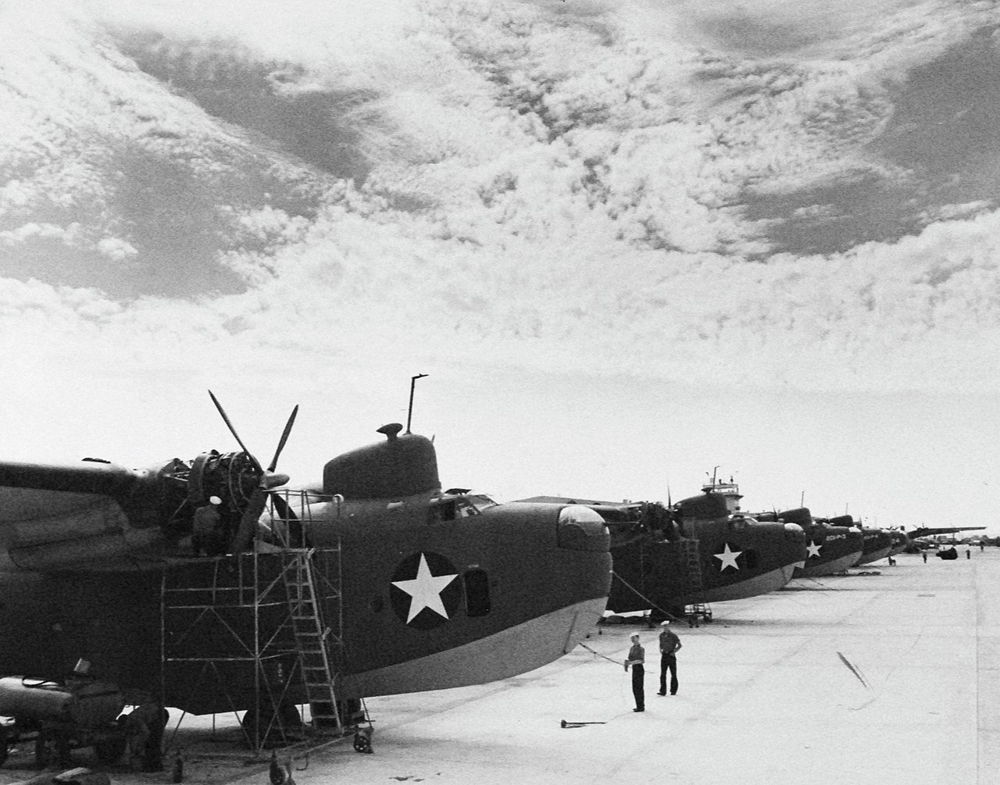
Cannon Air Force Base, New Mexico
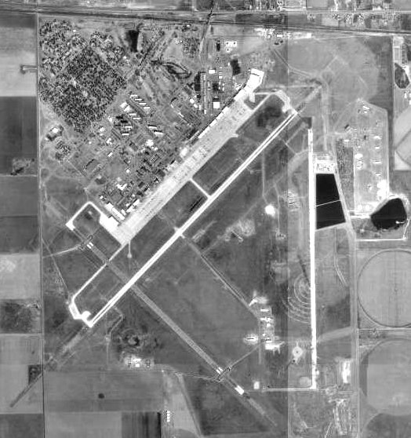
Carswell Air Force Base, Texas
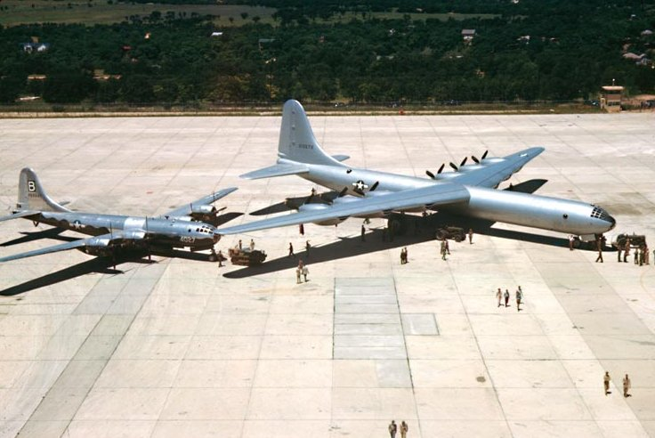
Davis-Monthan Air Force Base, Arizona
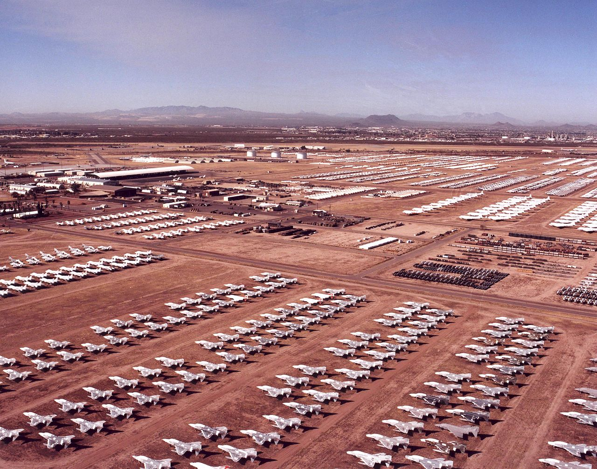
Ellsworth Air Force Base, South Dakota
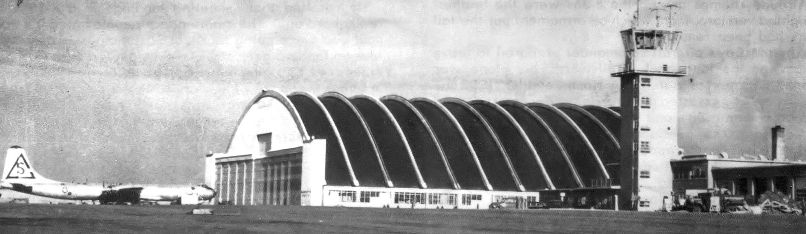
MacDill Air Force Base, Florida
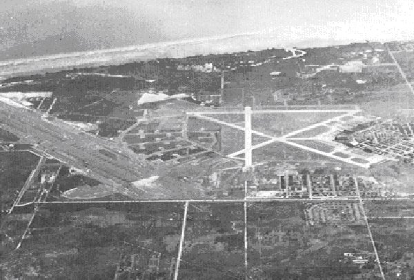
Mountain Home Air Force Base, Idaho
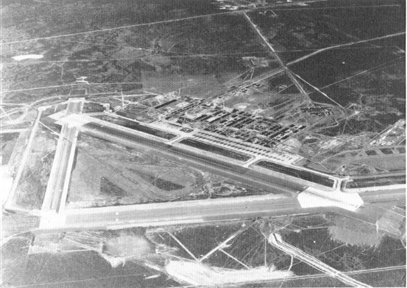
Kirtland Air Force Base, New Mexico
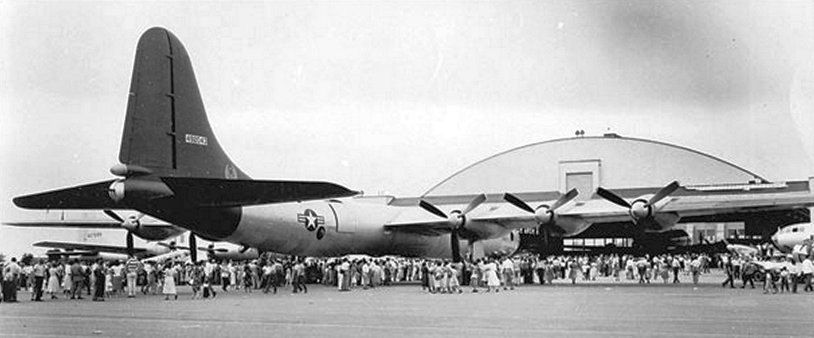
Loring Air Force Base, Maine
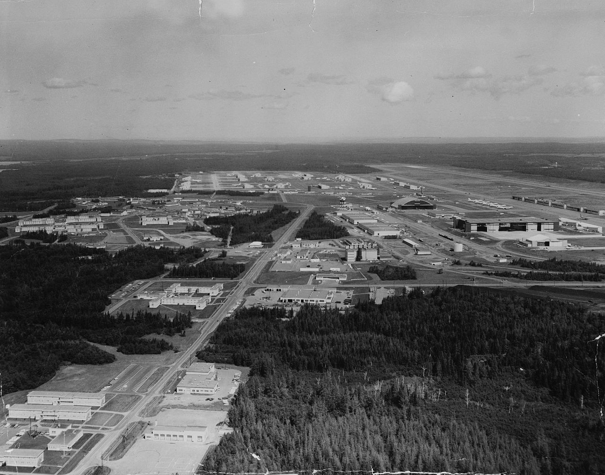
McGuire Air Force Base, New Jersey
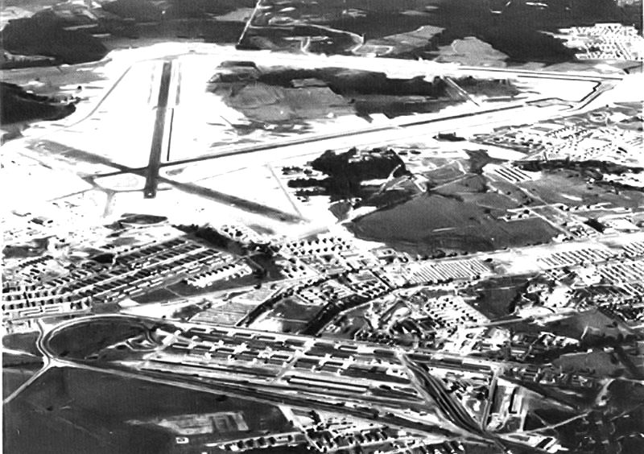
Fairchild Air Force Base, Washington
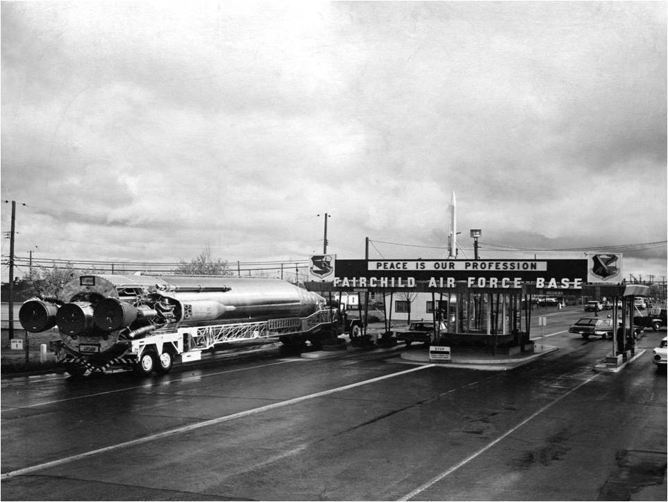
Wendover Air Force Base, Utah
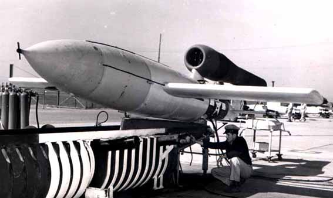